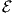
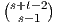
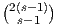
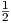
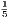
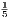
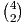

This column is also available in pdf: filename RamseyLineSegment.pdf
Consider n line segments S1,…,Sn on the plane in general position (ie., segments are either disjoint or
intersect in exactly one point). We ask the following question:
How many pairwise disjoint segments OR how many pairwise intersecting segments are
there?
Define the intersection graph G = (V,E) where each segment Si is associated to a corresponding node V i, and where there is an edge {V i,V j} if and only if the corresponding line segments intersect (Si ∩ Sj ⁄= ∅). A subset of pairwise intersecting segments corresponds to a clique in G, and a subset of pairwise disjoint segments corresponds to an independent set in G (an anti-clique also called a stable). Consider the complement graph = (V,) where = \E, with = {{V i,V j} : i ⁄= j} the full edge set. is the disjointness graph [3] of the segments (i.e., an edge between nodes if and only if corresponding segments are disjoint), and we have G ∪ = Kn, the clique of size n.
Ramsey-type theorems are characterizing the following types of questions: “How large a structure must be to guarantee a given property?” Surprisingly, complete disorder is impossible! That is, there always exists (some) order in structures!
Define the Ramsey number R(s,t) as the minimum number n such that any graph with |V | = n nodes contains either an independent set of size s or a clique Kt of size t.
One can prove that those Ramsey numbers are all finite [4] (by proving the recursive formula R(s,t) ≤ R(s - 1,t) + R(s,t - 1) with terminal cases R(s,1) = R(1,t) = 1 for s,t ≥ 1), and that the following bound holds (due to the theorem of Erdös-Szekeres [2]):
When s = t,  =  is a central binomial coefficient that is upper bounded by 22s. Therefore the diagonal Ramsey number R(s) = R(s,s) is upper bounded by 22s. Furthermore, we have the following lower bound: 2 < R(s) when s ≥ 3 [2]. Thus s ≥⌊ log 2n⌋. Erdös proved using a probabilistic argument [1] that there exists a graph G such that s ≤ 2log 2n (G and do not contain Ks subgraphs). It is proved in [3] (2017) a much stronger result that s = Ω(n) for intersection graphs of line segments: Thus there are always Ω(n) pairwise disjoint or pairwise intersecting segments in a set of n segments in general position.
In general, one can consider a coloring of the edges of the clique Kn into c colors, and asks for the largest monochromatic clique Km in the edge-colored Kn. For the pairwise disjoint/intersecting line segments, we have c = 2: Say, we color edges red when their corresponding segments intersect and blue, otherwise.
Ramsey’s theorem [4] (1930) states that for all c, there exists n ≥ m ≥ 2 such that every c-coloring of Kn has a monochromatic clique Km.
Let us conclude with the theorem on acquaintances (people who already met) and strangers (people who meet for the first time): In a group of six people, either at least three of them are pairwise mutual strangers or at least three of them are pairwise mutual acquaintances. Consider K6 (n = 6, 15 edges), and color an edge in red if the edge people already met and in blue, otherwise. Then there is a monochromatic triangle (m = 3). Proof: R(3) = R(3,3) ≤ = 6.
Well, it is known that R(4) = 18 but R(5) is not known! We only know that 43 ≤ R(5) ≤ 48, 102 ≤ R(6,6) ≤ 165, etc. Quantum computers [5] can be used to compute Ramsey numbers!
Initially created 27th November 2017 (last updated November 30, 2017).
[1] Paul Erdös. Some remarks on the theory of graphs. Bulletin of the American Mathematical Society, 53(4):292–294, 1947.
[2] Paul Erdös and George Szekeres. A combinatorial problem in geometry. Compositio Mathematica, 2:463–470, 1935.
[3] J. Pach, G. Tardos, and G. Toth. Disjointness graphs of segments. ArXiv e-prints, April 2017.
[4] Frank P Ramsey. On a problem of formal logic. In Classic Papers in Combinatorics, pages 1–24. Springer, 2009.
[5] Hefeng Wang. Determining Ramsey numbers on a quantum computer. Physical Review A, 93(3), 2016.